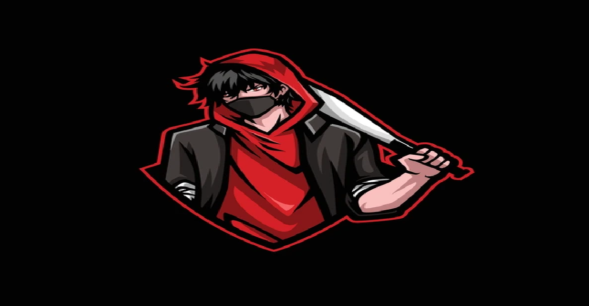
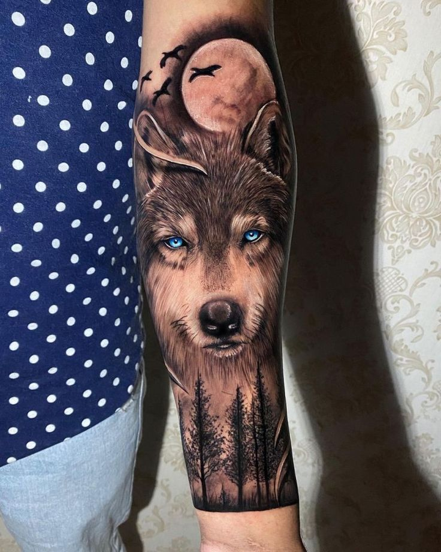
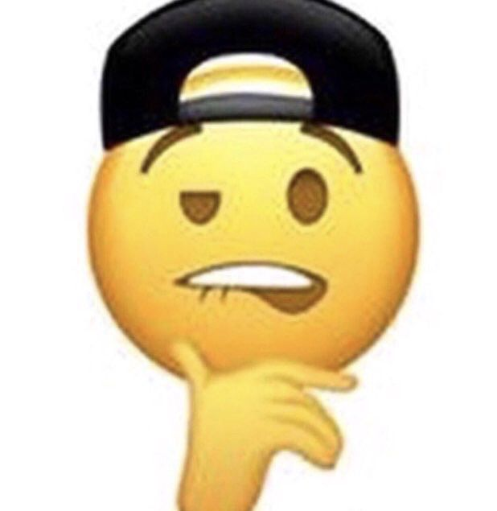
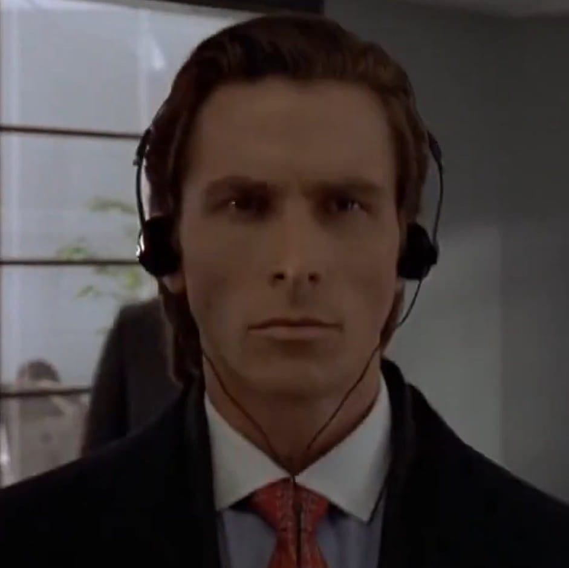
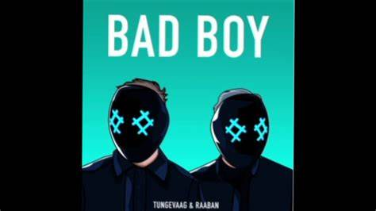
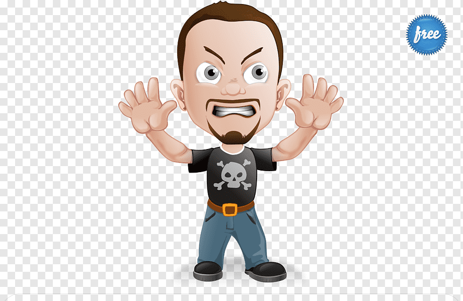

Kolory: Jak już wiesz, czerń to podstawa. Ale nie zapominaj o skórzanych dodatkach i metalowych akcentach. Kolorystyka to klucz, bo bad boy bez czerni jest jak kot bez pazurów.
Tatuaże: Nic nie mówi „jestem niegrzeczny” lepiej niż tatuaż. Oczywiście nie zachęcamy do trwałych zmian, ale na początek możesz zacząć od tych zmywalnych. Uwaga: unikaj serduszek i kwiatków - liczą się tylko groźne motywy!
Nieprzeniknione spojrzenie: Przed lustrem ćwicz wyraz twarzy, który mówi „niczego się nie boję”. Twoje brwi powinny być lekko zmarszczone, usta delikatnie zaciśnięte. Patrz w lustro jakbyś właśnie zobaczył rachunek za prąd - z niedowierzaniem i lekkim gniewem.
Słowa: Mów jakbyś był bohaterem filmu akcji. Każde Twoje zdanie musi brzmieć jak kwestia z filmu. "Chcesz ze mną zadrzeć? Będziesz tego żałował!"
Gesty: Musisz być władczy i pewny siebie. Rozmawiaj z kimś jakbyś miał kontrolę nad całym wszechświatem.
Ekstremalne hobby: Zapomnij o kolekcjonowaniu znaczków. Wspinaj się na szczyty bez zabezpieczeń, nurkuj w głębinach oceanu, jeździj na motocyklu bez trzymanki. Pokaż światu, że masz odwagę podejmować ryzyko.
Gry komputerowe: Wybieraj tylko te, które wymagają strategicznego myślenia i refleksu. Gry w stylu „pasjansa” zostaw babci.
Playlista: Twoja playlista powinna brzmieć jak najlepsza kolekcja rocka i metalu. Żadnych popowych kawałków, tylko prawdziwe, surowe brzmienia.
Karaoke: Zapomnij o miłosnych balladach. Jeśli śpiewasz, to tylko coś, co podniesie adrenalinę wszystkim wokół.
Charyzma: Bad boy nie oznacza bycia chamem. Musisz być charyzmatyczny, mówić z przekonaniem, ale z szacunkiem. Zostaw im wrażenie, że jesteś niebezpieczny, ale w głębi serca masz złote serce.
 mleko